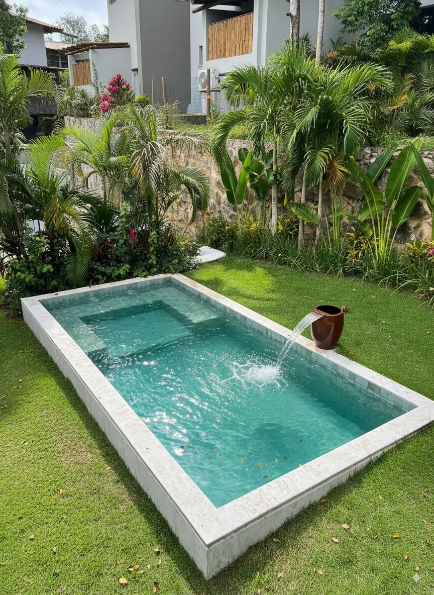

Piscinas de fibra
Modelos para diferentes espaços, com orientação para escolher a melhor opção para sua família.

Piscinas, spas e áreas de lazer em Candeias
A Linha Verde Spas e Piscinas atende Candeias com venda e instalação de piscinas de fibra, spas, hidromassagens e soluções para transformar sua casa em uma área de lazer.
Se você está pesquisando piscina de fibra em Candeias, spa residencial ou uma solução para valorizar sua área externa, a Linha Verde orienta desde a escolha do modelo até os próximos passos para instalação.
Modelos para diferentes espaços, com orientação para escolher a melhor opção para sua família.
Mais conforto e bem-estar para transformar sua casa em um ambiente de descanso.
Envie sua cidade, fotos do espaço e medidas aproximadas para iniciar o atendimento.
Para uma avaliação inicial em Candeias, envie medidas aproximadas, fotos da área e do acesso, além de indicar se o terreno tem desnível. A equipe confirma a disponibilidade depois de entender o projeto.
Planeje também onde ficarão equipamentos e como será a rotina de cuidado da água. Esses pontos tornam a área mais simples de usar depois da instalação.